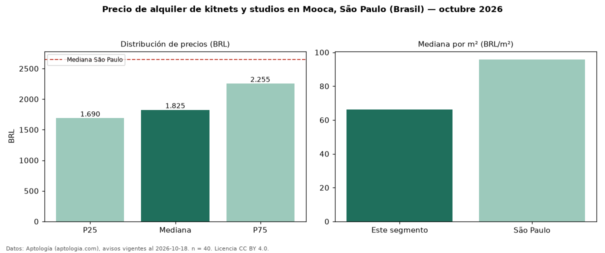

Precio de alquiler de kitnets y studios en Mooca, São Paulo (Brasil) — octubre 2026
Con 40 avisos vigentes, el canon mediano de kitnets y studios en alquiler en Mooca, São Paulo (Brasil) es BRL 1.825 al mes. Frente a la mediana de São Paulo para kitnets y studios (BRL 2.650), queda 31 % por debajo. Por metro cuadrado, la mediana es BRL 66,33/m² al mes (n = 40 avisos con área), 31 % por debajo de São Paulo (BRL 95,83/m²). Por precio mediano es el puesto 21 de 21 bairros de São Paulo con al menos 30 avisos de kitnets y studios en alquiler (BRL): entre las más económicas. El área mediana anunciada es 28 m². La cuota de mantenimiento o condominio mediana declarada es BRL 300 al mes (n = 31), aparte del canon. La mitad central de los avisos va de BRL 1.690 a BRL 2.255 (razón 1,3), una dispersión baja. Datos: Aptología (aptologia.com), CC BY 4.0 — https://www.aptologia.com/br/aluguel/sao-paulo/mooca. Archivos: PDF, CSV con las cifras y gráfica PNG.

| Avisos únicos | 40 |
|---|---|
| Percentil 25 | COP 1.690 |
| Mediana | COP 1.825 |
| Percentil 75 | COP 2.255 |
| Mediana por m² | COP 66 |
Fuente: avisos vigentes de portales inmobiliarios recopilados por Aptología, deduplicados (mínimo 30 avisos únicos por celda). Precios pedidos, no cerrados. Fecha: 2026-10-18.